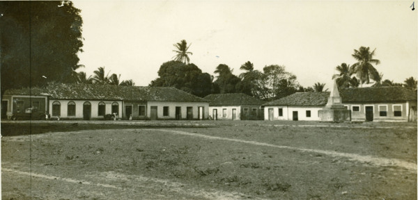
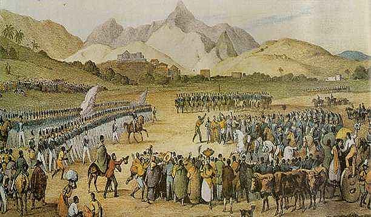
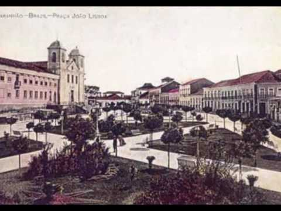
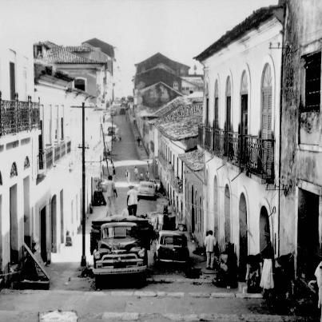
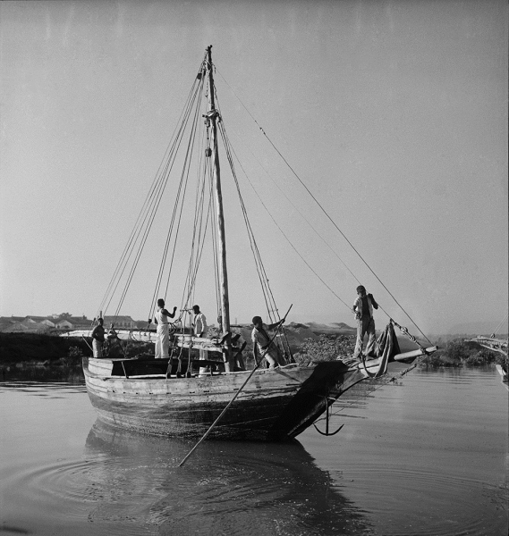
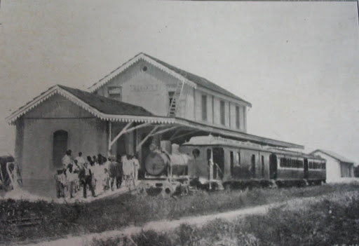

Imagens Históricas







Sobre a História Geral do Maranhão
Os primeiros europeus a chegarem à área que hoje corresponde ao Estado do Maranhão foram os espanhóis, em 1500. No período houve várias tréguas, mas os portugueses retomaram a área em definitivo. Em 1612, a Coroa instituía o Estado do Maranhão e Grão-Pará
Índigenas do Maranhão
Índios dançando em círculo
Dentre as tribos tupis nós temos a famosa tribo Tupinambá, a tribo
que habitava o litoral do Maranhão na chegada dos portugueses, essa tribo
e luxúria, tendo uma arte extremamente é muito conhecida pela sua
vaidade rica que ia desde as pinturas corporais até seus belos mantos feitos com penas de pássaros.

Essa revolta, assim como as outras, teve as motivações na falta de interesse do império em ajudar as pessoas menos favorecidas, dando sempre privilégios aos elitistas e grandes latifundiários.
A Balaiada tem começo no interior do Maranhão, mais especificamente no pequeno povoado de Vila da Manga, hoje Nina Rodrigues, onde o vaqueiro Raimundo Gomes teve o irmão detido e preso injustamente, ele se uniu a alguns amigos.
A partir desse acontecimento, o Maranhão deixa de ser
Estado Colonial de Portugal para se constituir em
Província do Império do Brasil. Os governantes passam a ser escolhidos pelo
imperador do Brasil com o título de Presidente da Província do Maranhão.

© Copyright Maranhão Tour - 2021